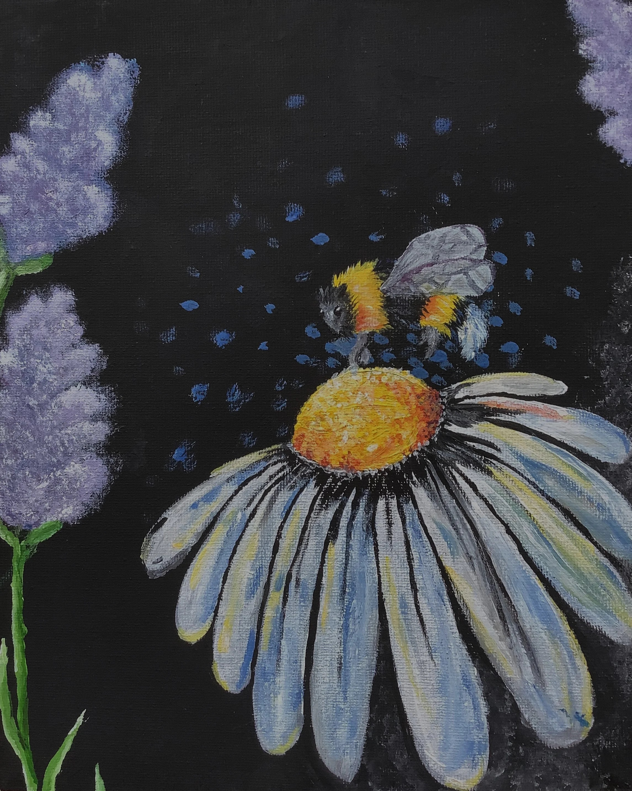
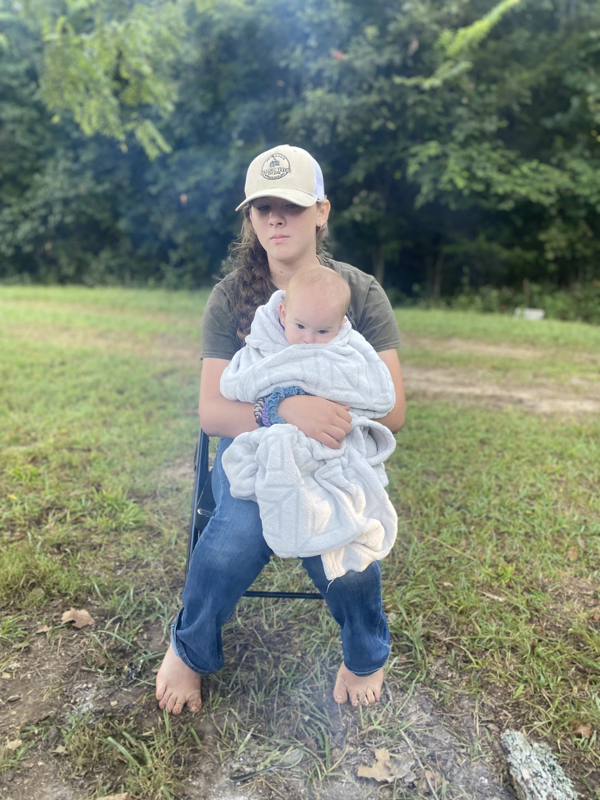
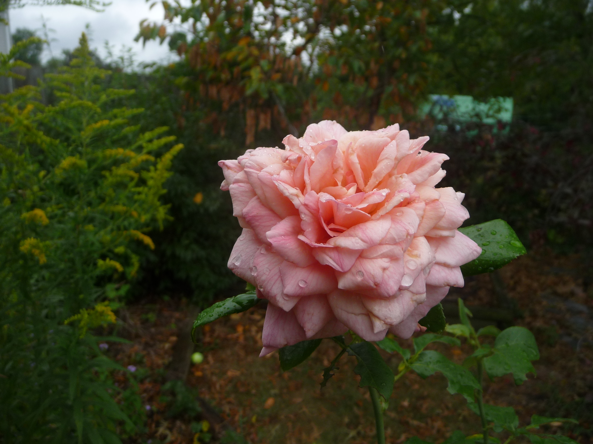
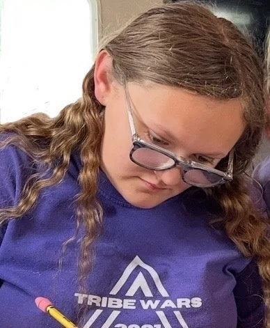

Carson Bullington is thirteen and in 7th grade.
He is a Director for the Counterculture for Christ blog.
He is a Christian and has never forgotten the truth of the gospel.
He loves art, writing, and reading.
He reads and writes sci-fi, and also does traditional and digital art.
Justin Everling is a fourteen-year-old writer who seeks to glorify God through his writing.
He is one of the three directors for Counterculture for Christ.
He likes to write Christian allegorical fantasy, and has completed one novel, The Remnant, and began work on another.
Other than writing, he enjoys birdwatching, piano, and spending time with his family.
He is so excited to be working with other teens to change the world through their writing.
Jadon G. Smith is seventeen years old and devoted to understanding the world God created, especially the abstract realm of thought and beliefs.
His dedication to both writing for and guiding Counterculture for Christ has culminated in his role as both a writer and a director of the blog.
After roughly a year of dedicating himself to seeking the greatest Truth, Jadon gave his life to Christ in November of 2022.
Ever since then, his interests have consisted of learning about apologetics, theology, philosophy, psychology, and more.
Other hobbies of his include texting friends, reading nonfiction, writing stories, teaching, going to youth group, watching documentaries, and playing Super Smash Bros Ultimate with his brother.
One day he hopes to work as an apologist, helping others seek Truth wherever it may be, and doing so virtuously.

Madeline Rosenlund is 18-years-old and has been a storyteller at heart for as long as she can remember.
Sometimes, her fictional worlds seem more alive to her than the real one.
One of the outlets she has found for her creativity is Counterculture for Christ, where she crafts words along with an amazing team of other young writers.
Jesus Christ is her Lord and Savior, and she proudly calls herself a Daughter of the King.
Besides writing, some of her other hobbies include reading, learning about history, and biking.
She is honored to be a part of this community.
J.S.S. English has been writing for about four years.
He writes mostly sci-fi and fantasy but has recently found his place as a writer for Counterculture for Christ, for which he writes in the Creative Writing, Culture/History, and Inspiration categories.
Currently in eleventh grade, he loves reading, writing, hunting for mushrooms, art, theater, spending time at the coast, and snuggling with his older sister's pug.
He has joined the blog to be a part of something fun and encourage people through his writing.

Sarah J. Sobie is a 16 year-old who has been writing stories ever since she can remember.
Recently, she has started writing more seriously, and she found herself becoming a writer and an artist for the Counterculture for Christ.
She takes pride in calling herself a follower of Jesus and tries to reflect His love and truth in whatever she does and through whatever she writes.
In her spare time, she likes to write fantasy, historical fiction, and mystery.
And for the blog, she writes for the categories of Creative Writing, Christianity, Psychology/Philosophy, and Inspiration.
She has a special interest in psychology and the amazing way God has created our minds.
Some of her other hobbies include art, reading, photography, and playing the piano.
Through writing on the blog, she hopes to inspire and encourage others, but most importantly, have fun!
She feels so excited to be a part of this community and the fact that she gets to share what she’s passionate about to inspire others.

Megan Kissling is a rather wild, adventurous, and imaginative 14 year old author in her last year of high school.
She’s been writing for 3 and a half years, going from a terribly, handwritten, unedited 8k words to a recently published full length novel, ‘Cursed Heir’.
She is now writing in a plethora of genres and is nearly finished with two other book drafts!.
She’s one of seven children, living on a 64 acre homestead in southern Missouri.
She loves to play violin, read, write, and take part in whatever random outdoor activities the rest of her family is doing, and she hates onions, math, shoes and dresses.
She’s been a believer since August of 2018 when she ended up getting mad at her siblings for interrupting her attempts to ask Jesus into her heart 😜
But since then she has grown in her faith and hopes to reflect the light of Christ in her writing.
Her role in the Counterculture for Christ is to be a writer, editor, and whatever other occupation that needs help being filled and she can’t wait to see what God will do with this amazing opportunity to share, hope, encouragement, and faith alongside fellow authors like her!

Ella Icardi began writing as soon as she could first put pen to paper, and hasn’t stopped since.
Though she writes fantasy on the side, she’s found her place in the Counterculture for Christ as an editor and artist.
Currently in her sophomore year of high school, she loves reading, writing, art, theater, listening to music, and claiming to have no time for hobbies but still doing them anyway.
She joined the blog to be a part of something fun and powerful and is so excited to see what God will do through it!

Emma Dooley is a twenty year old Christian who spends her time as a writer by day and artist by night.
She wrote her first story when she was nine years old and hasn’t stopped since. When she was 16, she started to draw fanart and now creates sketches of her own characters.
She dreams of publishing a self illustrated children's book “because no dreams are too big for God”.
She writes faith filled stories in multiple genres including sci-fi, fantasy, and contemporary YA.
With the Lord as her savior, she believes that nothing is impossible. She dreams of being a book editor and audiobook narrator.
As a social media manager and writer for Counterculture for Christ, Emma wants to inspire teens that youth doesn’t matter, all things are possible, and God gave you your dreams and gifts for a reason.
Example author bio. Name, what they do blah blah
Example author bio. Name, what they do blah blah

Example author bio. Name, what they do blah blah